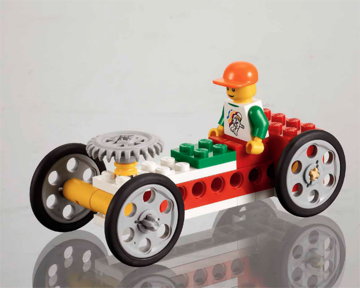

手推车
（Go-Cart）
schedule30-40 分钟
stars初级（Beginner）
face3-5 年级
一. 场景（Connect）
山姆（Sam）和莎莉（Sally）喜欢玩集市上的手推车，可以开着手推车到处逛，也可以在跑道上进行比赛。你驾驶（Steer）过手推车吗？手推车的移动（Move）和转动（Turn）需要哪些机械装置？我们来构建一个手推车吧！
二. 构建（Building）



需要用手转动黄色手柄，来驱动滑轮，使地板旋转。
三. 思考（Contemplate）

3.1. 疯狂地板利用了什么原理？

3.1. 疯狂地板利用了什么原理？
- 【疯狂地板利用了什么原理？】滑轮及滑轮组原理。
- 【什么是滑轮（Pulley）？】周边有槽，能够绕轴转动的轮子称为滑轮。
- 【滑轮的主要功能是什么？】牵拉负载、改变施力方向、传输动力。
- 【什么是滑轮组？】多个滑轮，通过柔索（绳、链条等）连接在一起的一种简单机械。可以省力、改变用力方向、传输动力。
- 疯狂地板使用了 3 个灰色大滑轮，4 个黄色小滑轮，共 7 个滑轮组合成了一个滑轮组，来驱动地板旋转。
3.2. 疯狂地板使用了哪种类型滑轮？

3.2. 疯狂地板使用了哪种类型滑轮？
- 【定滑轮（Fixed Pulley）】工作时，轴的位置固定不动的滑轮，称为定滑轮。一般用来改变用力方向。如：疯狂地板、电梯等。
- 【动滑轮（Movable Pulley）】工作时，轴的位置随被拉动的物体一起运动的滑轮，称为动滑轮。一般用来省力。如：吊车。
- 【滑轮组（Pulley Block）】多个滑轮，通过柔索（绳、链条等）连接在一起的一种简单机械。一般用来省力、改变用力方向、传输动力。
- 疯狂地板使用了滑轮组，组内使用了定滑轮，来传输动力。
3.3. 观察、测量
- 【观察一】两块地板的旋转速度和方向是否一致？
- 【观察二】用手轻轻地抓住地板来阻止其转动，会发生什么？
- 【测量】地板旋转一圈，需要转动手把几圈？
- 【数据记录】记录观察结果和测量数据。仔细观察地板和把手的起点位置，尝试多次，确保测量的正确性。
结论（Conclusion）

- 【观察一】两块地板的旋转速度和方向是否一致？
【结论】旋转速度和方向是一致的，因为三个滑轮的大小是一样的。 - 【观察二】用手轻轻地抓住地板来阻止其转动，会发生什么？
【结论】手会感觉到有一股力量，滑轮的皮带会打滑（Slip）。 - 【测量】地板旋转一圈，需要转动手把几圈？
【数据】大约四圈。
3.4. 调整滑轮传动带（橡皮筋）

3.4. 调整滑轮传动带（橡皮筋）
- 【调整滑轮传动带】使大滑轮和小滑轮相连。
- 【讨论】调整滑轮之间的连接后，会发生什么不同的效果？
- 【预测】调整后的模型，左边地板转得快，还是右边地板转得快？
- 【测量】地板旋转一圈，需要转动手把几圈？
- 【数据记录】记录观察结果和测量数据。仔细观察地板和手把的起点位置，尝试多次，确保测量的正确性。
结论（Conclusion）
- 【讨论】调整滑轮之间的连接后，会发生什么不同的效果？
【结论】两个地板旋转速度不一样了，且左边的地板旋转的快。 - 【预测】调整后的模型，左边地板转得快，还是右边地板转得快？
【结论】左边的地板旋转的快，因为驱动左边地板的滑轮组是大滑轮带动小滑轮，滑轮间的转动比（Turning Ratio）为 N:1，大滑轮使小滑轮转动的变快了。 - 【测量】地板旋转一圈，需要转动手把几圈？
【数据】大约X圈。滑轮间的转动比（Turning Ratio）为 N:1，取决于滑轮大小。
3.5. 总结（Summary）
- 这堂课我们学习了滑轮，滑轮组内的滑轮可以相互传输动力，滑轮间的转动比（Turning Ratio）取决于滑轮的大小。
四. 分享（Share）

- 与疯狂地板合张影吧！
- 把对疯狂地板的想法写下来！
- 同学们，分享你的创造成果吧！
五. 扩展（Extend）

- 【画滑轮】发现生活中使用的滑轮，并试着把它画出来！
- 【混合皮带传动】同一轴上，两种不同尺寸的滑轮，连接到其他滑轮上，可建立加减速（Gearing Up/Down）装置。